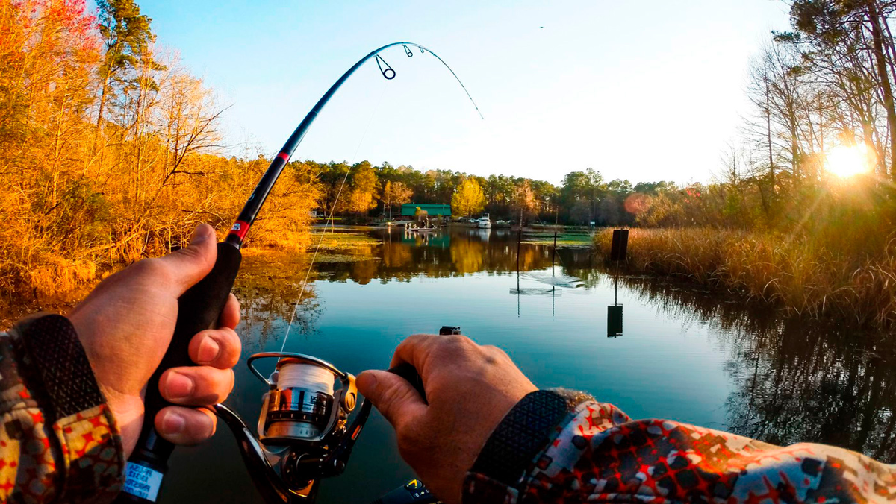

Виды рыбалки
| Вид рыбалки | Снасти | Рыба |
|---|---|---|
| Речная | Удочка, спиннинг | Карась, щука, окунь |
| Морская | Морская удочка, сеть | Селедка, краб, акула |
| Зимняя | Короткая удочка, ледобур | Окунь, плотва, ерш |
| Нахлыст | Нахлыстовое удилище, мушки | Форель, хариус, лосось |
| Глубоководная | Морское удилище, эхолот | Тунец, марлин, треска |
Речная рыба
Речная рыбалка — это ловля рыбы в реках, озерах и прудах. Для начала достаточно иметь простую удочку и червяка. Летом можно сидеть на берегу и наслаждаться природой. Речная рыбалка — отличное занятие для выходных.